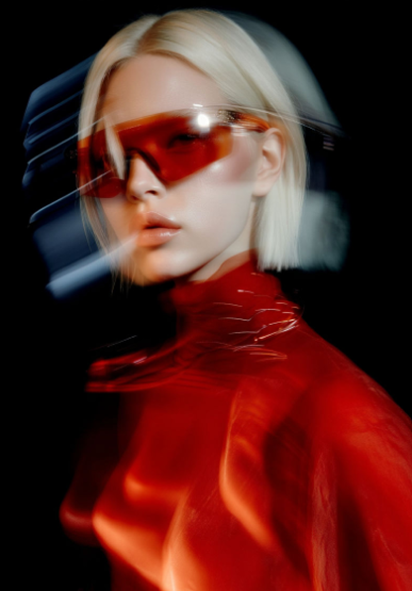
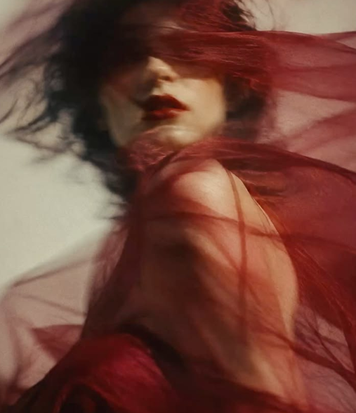
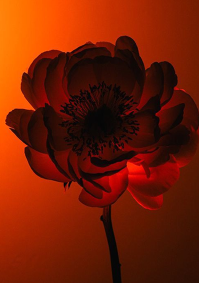
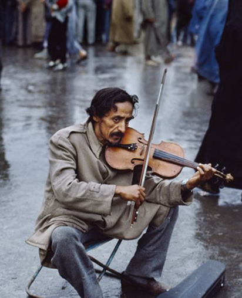

IMAGINE. CREATE. CAPTIVATE.
We create bold, captivating visuals through animation, motion graphics, and visual effects — turning ideas into stories that move.
See Our Work
production

Motion Graphics

Visual Effects
From animation and motion graphics to visual effects and color grading, we bring ideas to life through bold, engaging visuals. Whether it's an animated ad, a title sequence, or a brand story, we make every frame count.
From concept to script, storyboards, preproduction, and production day. We collaborate with our clients to craft visual narratives with creativity and intent.
We narrate stories and craft visual impressions to shape an outcome. Whether it serves to evoke an emotion, establish a brand presence, or simply entertain, editing is an art that can transform the dynamics of any footage, and we have the expertise to achieve it.
Motion Graphics and design are an integral part of communication. Design in motion allows for emphasis and timing in the message. We have extensive experience with typography based projects. Our favorite jobs include the integration of design elements for purpose, not just to add elegance.
We have an extensive background in Visual Effects both on and off set, we aim to create, fix or further integrate visual effects for realism and integration into the story. VFX work has a low tolerance for audience acceptance. If you notice it, the story is not believable.
Color correction and Color Grading are often though of as the same thing. They are not. Matching shots, and fixing shots is the first correction step to the grading process. In Color grading, the colorist works with the mood, ethos and purpose of the scene. Creating looks are what set a Colorist apart from color correction. Which is the distinct artistry of color in film in television.
Let's Have a Call.
Get in Touch